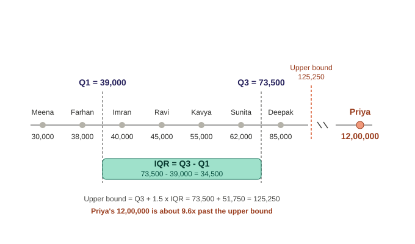
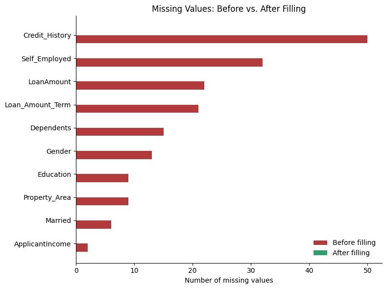

Deepak got the loan dataset and went straight to the model. Fit, predict, score — 94% on the first try. He was delighted.
Then he looked at the table. Income had blanks. Gender was recorded as "Male", "male", "M" and " Male ". Two hundred rows were exact duplicates. One applicant was 3 years old.
The 94% was measuring the mess, not the customers. The duplicated rows sat in both train and test, so the model was scored on rows it had already memorised.
Cleaning is not tidying for its own sake. Every defect above quietly changes the number the model reports back to you.
🔑 The one idea
A model can only be as honest as the table you hand it. Clean first, model second.
With all 8 rows collected (Topic 1), Arjun's manager asks: "Can we use this
data as-is?" Two problems block the answer:
Deepak's credit score is missing (API timeout).
Priya's income (₹12,00,000) looks like a data-entry typo.
Each problem needs a different fix, because — as established in Topic 1 —
they came from different failure modes.
Problem 1: Missing Value — Imputation
With only 8 rows total, dropping Deepak's entire record over one missing
field is wasteful. Instead, the missing credit score is imputed —
filled in using a statistic computed from the other 7 known scores.
Decision: use the mean (666.43) to impute Deepak's credit score.
Note: mean and median are fairly close here (666.43 vs 680) — there's no
strong skew in this particular set of 7 scores, so either would have been a
reasonable choice. The general rule to remember for future topics: when a
dataset has significant skew or extreme values, the median is more
robust because the mean gets pulled toward outliers; when the data is
fairly evenly spread (like this one), the mean is often used by default
since it uses all data points rather than just the middle one.
Problem 2: Outlier — IQR Method
Instead of eyeballing that ₹12,00,000 "looks wrong," the IQR method proves
it statistically.
The 1.5× multiplier (a convention introduced by statistician John Tukey) is
a buffer added on top of the normal range — wide enough that ordinary
variation stays inside it, narrow enough that genuinely extreme values
still get flagged. Flagging everything outside Q1–Q3 directly would mark
50% of all data as outliers, which is useless — hence the buffer.
Step 6 — Compare:
Priya's income (₹12,00,000) vs. upper bound (₹125,250) → ₹12,00,000 is
about 9.6× past the upper bound. Confirmed statistical outlier, not just
a visual impression.
Visual
A number line plot showed the 7 clustered "normal" incomes, the IQR box
(Q1 to Q3), the upper bound as a dashed line, and Priya's income sitting far
beyond it on a broken axis — visually confirming how far outside normal
range her value falls.
Clarifying Questions Asked During This Topic
These are the specific points of confusion that came up, kept here because
they're worth remembering — not just the final answer, but why the
confusion made sense.
Q: Median is just "sort and pick the middle number" — why did you
average two numbers for Q1?
A: That rule still holds. The averaging only happens when there's no
single middle value — i.e. an even count of numbers. {10, 20, 30} (odd)
has one clean middle: 20. {10, 20} (even) has two numbers tied for the
middle, so the convention is to average them: (10+20)/2 = 15. Each half of
the 8 incomes has 4 values (even), which is why finding Q1 and Q3 both
required averaging two middle values.
Q: What is IQR and what is the upper bound — these were never properly
explained before being used?
A: Worked from a small 4-number example first (10, 20, 30, 40) before
applying to the real data:
Q1 = median of the lower half = "the value below which the bottom 25%
sits."
Q3 = median of the upper half = "the value below which the bottom 75%
sits."
IQR = Q3 − Q1 = the width of the middle 50% of the data — where
"typical" values live.
Upper bound = Q3 + 1.5×IQR — a buffer zone added beyond the normal
range, so that only values well outside typical spread get flagged.
Q: Why 1.5 × IQR specifically — where does that number come from?
A: It's a convention introduced by statistician John Tukey, not something
derived from this specific dataset. Flagging everything simply outside
Q1–Q3 would mark 50% of all data as outliers — useless. 1.5× IQR acts as a
buffer: wide enough that ordinary variation stays inside it, narrow enough
that genuinely extreme values (like Priya's income) still get caught.
(A stricter 3×IQR threshold exists for "extreme outliers," but 1.5× is the
standard cutoff.)
Visual Walkthrough

Income outlier chart showing Q1, Q3, IQR box, upper bound, and Priya's flagged outlier value
A labeled number-line chart plotted all 8 customers together:
The 7 "normal" customers (Meena, Farhan, Imran, Ravi, Kavya, Sunita,
Deepak) shown as gray dots, each labeled with name and exact income
(30,000 through 85,000).
A dashed vertical line at Q1 = 39,000, positioned between Farhan
(38,000) and Imran (40,000) — matching the calculation, since Q1 is the
average of those two middle values.
A dashed vertical line at Q3 = 73,500, positioned between Sunita
(62,000) and Deepak (85,000) — again matching the calculation.
A teal box spanning from the Q1 line to the Q3 line, with the IQR
calculation labeled directly inside it: IQR = Q3 − Q1 = 73,500 −
39,000 = 34,500.
A red dashed line marking the upper bound (125,250), positioned just
past Deepak's dot — clearly beyond all 7 normal incomes.
A broken/zigzag mark on the axis line, signaling the scale jumps
discontinuously — because Priya's value is too far away to plot to true
scale alongside the others.
Priya's dot, shown in red past the break, labeled 12,00,000, with a
caption underneath: "Priya's 12,00,000 is about 9.6x past the upper
bound."
The visual reinforces the same conclusion as the arithmetic: all 7 normal
incomes cluster tightly near the IQR box, while Priya's value sits in
completely different territory — not just "a bit high," but far enough out
to be flagged as a statistical outlier rather than a judgment call.
Key Takeaways
Missing values are handled through imputation (mean or median),
chosen based on how skewed the rest of the data is. Mean uses all data
points; median is robust to skew/extremes.
Median calculation rule: odd count → middle value directly; even
count → average the two middle values. This same even/odd rule applies
when finding Q1 and Q3, since each is itself a median of a sub-group.
IQR method for outliers: IQR = Q3 − Q1 defines the "normal" spread;
1.5×IQR is a buffer added beyond Q3 (or subtracted below Q1, for low
outliers) before a value is flagged.
Knowing why a value is missing or wrong (Topic 1) directly informs
how to fix it (Topic 2) — an API-timeout gap gets imputed, a
likely-typo outlier gets flagged and corrected/excluded.
GenAI / RAG Bridge
In a RAG pipeline, the equivalent of imputation is handling missing or
incomplete document fields — e.g., a scraped page missing its title or
publish date, filled with a reasonable default rather than dropping the
whole document. The equivalent of outlier detection is filtering out
corrupted or nonsensical chunks (e.g., garbled OCR text, a scraping error
that returned raw HTML instead of content) before they get embedded and
pollute retrieval results — using rule-based thresholds much like the IQR
method flags Priya's income.
FAQ
General points people commonly get confused about with this topic — not
specific to this conversation, just worth having on record.
Q: Should missing values always be imputed with the mean?
A: No. Mean works well when the data is roughly symmetric (no strong
skew), because it uses every data point. When data is skewed or has
extreme values, the mean gets pulled toward those extremes — median is
more robust in that case since it only cares about the middle position,
not the actual magnitude of outlying values.
Q: Isn't it simpler to just drop rows with missing or outlier values?
A: Simpler, yes — but costly, especially with small datasets. Dropping
Deepak's entire row over one missing field throws away 7 other perfectly
good fields. The tradeoff is data loss vs. introduced bias: imputation
keeps the row but adds an estimate; dropping keeps everything "real" but
shrinks the dataset. With only 8 rows, dropping is rarely worth it.
Q: Does the IQR method work well on any dataset size?
A: It works on any size mathematically, but with very small samples (like
8 rows here), Q1 and Q3 are less statistically stable — a single value
shifts them more than it would in a dataset of thousands. The method is
still the right conceptual tool to learn on; production datasets are
usually much larger, which makes IQR bounds more reliable.
Q: If I find more than one outlier, do I just drop all of them
automatically?
A: No — IQR flags candidates, it doesn't make the decision for you. Each
flagged value still needs a judgment call: is it a data-entry error (like
Priya's likely typo), a legitimate rare case (a genuinely high earner),
or a sign of a deeper data issue? The fix (correct, cap, or drop) depends
on which of those it turns out to be.
Interview Questions & Answers
Q: What's the difference between mean and median imputation, and when
would you choose one over the other?
A: Mean imputation replaces a missing value with the average of the known
values; median imputation uses the middle value of the sorted known
values. Mean is preferred on roughly symmetric, non-skewed data since it
uses all available information. Median is preferred when the data is
skewed or contains outliers, since the mean would be distorted by those
extreme values while the median stays stable.
Q: How does the IQR method detect outliers? What's the formula?
A: Sort the data, split it into a lower half and upper half, and compute
Q1 (median of the lower half) and Q3 (median of the upper half). IQR =
Q3 − Q1 represents the spread of the middle 50% of the data. Any value
above Q3 + 1.5 × IQR (or below Q1 − 1.5 × IQR) is flagged as a
statistical outlier.
Q: Why not just delete every row with a missing or outlier value?
A: Deleting is the simplest option but can meaningfully shrink a dataset
and introduce bias if the missingness or outlier isn't random — for
example, if higher earners are more likely to have data-entry issues,
deleting those rows systematically removes a segment of the population
rather than "bad data" at random. Imputation or correction preserves more
of the dataset's signal, provided the substitution method is reasonable.
Q: Where does data cleaning fit in a production ML pipeline, and why
does it matter for model performance?
A: It sits right after data collection and before feature engineering —
the raw ingested data is rarely usable as-is. It matters because model
quality is bounded by input quality: unresolved missing values can break
training entirely (many algorithms can't handle nulls), and unresolved
outliers can distort learned relationships, especially in models sensitive
to scale like linear regression. Clean data isn't a nice-to-have step —
it's a prerequisite for anything trained afterward to be trustworthy.
Status
✅ Topic 2 understood and confirmed. Deepak's credit score → imputed with
mean (666.43). Priya's income → confirmed statistical outlier via IQR
method. Ready to proceed to Topic 3: Feature Engineering, Encoding.
Source: external course (WsCubeTech). This overlaps heavily with Feature
Engineering from 02_ML_Roadmap.MD — same underlying work, different
course's name for the umbrella. Two of the six items here are genuinely
new ground: Handling Duplicates and Dealing with Inconsistent Data.
What Is Data Cleaning?
Note
"Data cleaning is the process of preparing data for analysis / ML / DL
by removing or modifying data that is incorrect, incomplete, irrelevant,
duplicated, or improperly formatted."
Five distinct problems live inside that one sentence:
Problem
Meaning
Quick example
Incorrect
The value is factually wrong
Age = 250
Incomplete
The value is missing
Credit score = (blank)
Irrelevant
The column/row doesn't help predict anything
A row for a customer outside your target market
Duplicated
The same real-world record appears more than once
Two identical loan applications from a scraping glitch
Improperly formatted
The value is present and correct, just not usable as-is
"APPLE iPhone 8 Plus (Gold, 64 GB)" as a single text field
The Raw → Cleaned Example (from the slide)
The slide's two spreadsheets are a before/after pair, and it's a genuinely
good illustration of why cleaning exists:
Before (raw, scraped from an e-commerce site): a Product Name column
like "APPLE iPhone 8 Plus (Gold, 64 GB)" right next to
"Apple iPhone XR ((PRODUCT)RED, 128 GB) (Includes EarPods, Power Adapter)"
— inconsistent capitalization (APPLE vs Apple), inconsistent length,
extra bundled info, all crammed into one free-text field.
After (cleaned): columns like iphone_no, iphone_variant,
iphone_color, iphone_gb — the same information, but split into
separate, structured, numeric-coded fields.
Why this matters: a model cannot read
"APPLE iPhone 8 Plus (Gold, 64 GB)" as a feature — it's not a number and
it's not a clean category, it's several different variables mashed into
one string (device line, color, storage size). Cleaning here means
parsing that one messy text column into several clean ones — which is
exactly the Categorical Encoding idea from 03_Types_Of_Variables.MD,
applied to a real Mixed Variable.
The 6 Sub-Skills of Data Cleaning
flow diagram (rendered in the notebook)
flowchart LR
DC["Data Cleaning"] --> DC1["1. Handling Missing Data"]
DC --> DC2["2. Outlier Detection & Handling"]
DC --> DC3["3. Data Scaling & Transformation"]
DC --> DC4["4. Encoding Categorical Variables"]
DC --> DC5["5. Handling Duplicates"]
DC --> DC6["6. Dealing with Inconsistent Data"]
style DC1 fill:#2f9e6f,stroke:#1e6b4b,color:#fff
style DC2 fill:#2f9e6f,stroke:#1e6b4b,color:#fff
"Categorical Encoding," Feature Engineering step 4 + the Ordinal/Nominal split from 03_Types_Of_Variables.MD
5
Handling Duplicates
⬜ Upcoming — new
Not covered anywhere yet
6
Dealing with Inconsistent Data
⬜ Upcoming — new
Not covered anywhere yet — this is exactly the APPLE vs Apple problem above
Notice #3 and #4 are the same two skills as Feature Engineering steps 5
and 4 in 02_ML_Roadmap.MD — this course is just presenting them again
under a "Data Cleaning" label instead of a "Feature Engineering" label.
Different books draw that boundary in different places; the technique is
identical either way. Only #5 and #6 below are genuinely new territory.
New Ground: Handling Duplicates
Type
What it looks like
Fix
Exact duplicates
Two rows, every column identical — usually a scraping/entry glitch
Drop one copy
Near-duplicates
Same real-world record, slightly different text — "Apple iPhone 8 Plus" vs "APPLE iPhone 8 Plus " (trailing space, different case)
Normalize first (lowercase, trim whitespace, standardize punctuation), then compare — matching on the raw strings would miss these entirely
The order matters: cleaning has to happen before deduplication, not
after — an exact-match dedup step run on raw text will silently miss every
near-duplicate.
New Ground: Dealing with Inconsistent Data
Data that's fully present but represented in more than one way for the
same real thing:
Kind of inconsistency
Example
Capitalization
"APPLE" vs "Apple" — straight from the slide
Category spelling/synonyms
"Male", "male", "M" all meaning the same category
Units
Some rows in ₹, others in $, in the same price column
Date formats
07/08/2026 — is that July 8th or August 7th?
Fix: standardize before doing anything else — consistent casing
(.str.lower() / .str.title()), a mapping table for known synonyms, one
unit and one date format enforced across the whole column.
Where This Fits in Your Roadmap
phase_3_classical_ml/02_data_cleaning/ (✅ complete per 00_strategy.md)
covered exactly sub-skills #1 and #2 above — its own title is literally
"Data Cleaning, Missing Values, Outliers." Duplicates, inconsistent data,
scaling, and encoding are scoped into Topic 3 (Feature Engineering,
Encoding), which is next up — this file is filling in the vocabulary
ahead of that topic starting.
FAQ — Common Mix-Ups
"Isn't Data Cleaning just a different course's name for Feature
Engineering?" Mostly, yes — heavy overlap. Different sources draw the
line differently; some call scaling/encoding "cleaning," others call it
"engineering." The skill is the same regardless of the label.
"Duplicates always mean two identical rows." The easy case, yes —
but near-duplicates (same entity, differently formatted text) are the
more common real-world case, and they require normalizing the text
first before they can even be detected.
"Inconsistent data is basically the same as missing data." No —
missing data isn't there at all. Inconsistent data is there, just
represented multiple different ways for the same real value. Different
problem, different fix (standardize, don't impute).
Interview-Style Q&A
Q: How do you detect duplicates that aren't byte-for-byte identical,
like "Apple" vs "APPLE"?
A: Normalize the text first — lowercase, trim whitespace, standardize
punctuation — then compare. An exact-match dedup on raw strings will miss
these; cleaning has to happen before deduplication.
Q: Why can't a model use a raw column like "APPLE iPhone 8 Plus (Gold, 64 GB)" directly?
A: It's not one variable, it's several (device line, color, storage)
packed into a single unstructured string. It has to be parsed into
separate clean columns first — exactly what the slide's "after" table
shows.
Q: Give an example of inconsistent data that has nothing to do with
capitalization.
A: Mixed date formats in the same column (07/08/2026 reads differently
in different locales), mixed units (₹ and $ in one price column), or
synonym categories that all mean the same thing ("N/A", "n/a",
"Not Available") but aren't recognized as identical by the system.
Loan_ID Gender Married Dependents Education Self_Employed \
0 LP001001 Male Yes 0 Not Graduate No
1 LP001002 Male Yes 0 Not Graduate No
2 LP001003 Female No 0 Graduate No
3 LP001004 Male Yes 0 Graduate No
4 LP001005 Male No 2 Graduate No
5 LP001006 Female Yes 0 Graduate No
6 LP001007 Male No 0 Graduate No
7 LP001008 NaN Yes 0 Not Graduate Yes
8 LP001009 Male No 0 Not Graduate No
9 LP001010 Male Yes 0 Graduate No
ApplicantIncome CoapplicantIncome LoanAmount Loan_Amount_Term \
0 1686.0 1020 80.0 360.0
1 2437.0 1201 122.0 360.0
2 8313.0 1065 319.0 360.0
3 5069.0 0 218.0 360.0
4 3002.0 2283 194.0 360.0
5 3918.0 1966 219.0 360.0
6 4255.0 2274 205.0 360.0
7 5890.0 2699 305.0 360.0
8 2296.0 1371 104.0 360.0
9 2897.0 4815 228.0 240.0
Credit_History Property_Area Loan_Status
0 1.0 Semiurban Y
1 1.0 Urban Y
2 1.0 Urban Y
3 1.0 Semiurban Y
4 0.0 Urban N
5 1.0 NaN Y
6 1.0 Rural Y
7 1.0 Urban Y
8 1.0 Semiurban Y
9 1.0 Semiurban Y
2. Shape — how many rows and columns?
codecell 5
dataset.shape
Output
(618, 13)
3. Which columns have missing values, and how many?
isnull() marks every cell True/False, .sum() adds those up per column.
5. Overall — what % of the entire dataset is missing?
dataset.shape[0] * dataset.shape[1] is the total number of cells (rows × columns); .isnull().sum().sum() is the total number of missing cells across every column.
Numbers tell you how much is missing; a picture tells you where — whether the gaps are scattered randomly or clustered in specific rows or columns. Two views below: a full heatmap of every cell, and a bar chart ranking the columns that actually have gaps.
codecell 13
import matplotlib.pyplot as plt
import seaborn as sns
from matplotlib.colors import ListedColormap
Heatmap — do columns go missing together?
A raw row-by-row map of all 618 rows gets visually noisy and doesn't render cleanly as a static image at that many rows. A more useful view instead: nullity correlation — does missingness in one column tend to happen alongside missingness in another? Near 0 = no relationship; near +1 = the two columns tend to be missing on the same rows; near −1 = when one is missing, the other tends to be present.
7. The 50% Rule — when a column isn't worth saving
Imputing a column that's more than half missing means inventing more data than you actually observed — past a certain point, dropping the column outright is more honest than filling it. Common rule of thumb: if a column is ≥ 50% missing, ignore (drop) it rather than impute it.
codecell 19
def flag_high_missing_columns(df, threshold=50):
"""Return columns whose missing-value percentage is >= threshold, worst first."""
missing_pct = (df.isnull().sum() / df.shape[0]) * 100
return missing_pct[missing_pct >= threshold].sort_values(ascending=False)
high_missing = flag_high_missing_columns(dataset, threshold=50)
if high_missing.empty:
print("No column crosses the 50% threshold — nothing to ignore on this rule.")
else:
print("Columns to ignore (>= 50% missing):")
print(high_missing)
Output
No column crosses the 50% threshold — nothing to ignore on this rule.
Worst column here (Credit_History) is only ~8% missing — nowhere near the 50% line, so the rule doesn't drop anything from this dataset, and dataset_cleaned above is identical to dataset. That's the correct outcome, not a wasted check: this guard is what you'd want running automatically before feature engineering on messier real-world data, where some column blowing past 50% missing is common — better to have it silently do nothing here than to have to remember to add it later when it actually matters.
Reading the result
Credit_History is the worst-affected column (~8% missing) — and it's also usually the single strongest predictor of Loan_Status in this kind of dataset, so this is the column worth the most care, not the least.
Self_Employed (~5% missing) is next — a categorical column, so mean/median imputation doesn't apply; mode (most frequent category) is the usual starting point.
CoapplicantIncome and Loan_Status have zero missing — nothing to do there (and note they, along with Loan_ID, show up blank in the correlation heatmap — correlation is undefined for a column with zero variance, i.e. nothing ever missing).
Overall, ~2.2% of all cells in the dataset are missing — a small fraction, but concentrated unevenly across columns rather than spread evenly, which is the normal case in real data.
The nullity correlation heatmap is essentially all near 0 — missingness in one column doesn't predict missingness in another here, i.e. each column's gaps look like independent, unrelated causes rather than one shared root problem (e.g. one bad data-entry batch that blanked out several fields at once).
Applying the 50% ignore-rule from section 7 removes zero columns here — every column is well under the line — so dataset_cleaned is safe to carry forward as-is into imputation, with no columns needing to be dropped outright first.
Next up: deciding how to fill each of these in — drop, mean/median (numeric), mode (categorical), or a model-based imputer — which is where 04_Data_Cleaning.MD's Handling Missing Data section picks back up.
8. Filling the Missing Values
Full walkthrough in 07_Filling_Missing_Values.MD — this is that note's code, run for real against dataset_cleaned (the column-checked dataframe from Section 7). Categorical columns get their mode; numerical columns get their median, except Credit_History, which is a 0/1 flag stored as a number, not a real continuous quantity — it gets mode too.
codecell 24
categorical_cols = dataset_cleaned.select_dtypes(include="str").columns
for col in categorical_cols:
dataset_cleaned[col] = dataset_cleaned[col].fillna(dataset_cleaned[col].mode()[0])
dataset_cleaned[categorical_cols].isnull().sum()
Every categorical column is now at 0 missing. Note the reassignment pattern (dataset_cleaned[col] = ...fillna(...)) rather than inplace=True — see 07_Filling_Missing_Values.MD for why the inplace=True version from the course slide silently fails under pandas 3.0's Copy-on-Write.
codecell 26
numerical_cols = dataset_cleaned.select_dtypes(include=["int64", "float64"]).columns
for col in numerical_cols:
if col == "Credit_History":
dataset_cleaned[col] = dataset_cleaned[col].fillna(dataset_cleaned[col].mode()[0])
else:
dataset_cleaned[col] = dataset_cleaned[col].fillna(dataset_cleaned[col].median())
dataset_cleaned[numerical_cols].isnull().sum()
The clearest way to show what filling actually did: the same per-column missing-count bar chart from Section 6, before and after, side by side.
codecell 30
before_counts = dataset.isnull().sum()
after_counts = dataset_cleaned.isnull().sum()
cols = before_counts[before_counts > 0].sort_values(ascending=False).index
y = range(len(cols))
height = 0.35
plt.figure(figsize=(8, 6))
plt.barh([i + height / 2 for i in y], before_counts[cols].values, height=height, color="#b33a3a", label="Before filling")
plt.barh([i - height / 2 for i in y], after_counts[cols].values, height=height, color="#2f9e6f", label="After filling")
plt.yticks(list(y), cols)
plt.gca().invert_yaxis()
plt.xlabel("Number of missing values")
plt.title("Missing Values: Before vs. After Filling")
plt.legend(frameon=False)
plt.gca().spines[["top", "right"]].set_visible(False)
plt.tight_layout()
plt.show()

Output from this notebook.
Reading the result (Section 8)
Every column that had gaps in Section 3 now reads 0 in the "after" bars — dataset_cleaned is fully filled, 618 rows × 13 columns, no missing values anywhere.
Credit_History (the worst column at ~8%) and Self_Employed (~5%) were the tallest "before" bars and are now flat — the two columns most worth double-checking if this were a real modeling project, since imputed values are still guesses, not observations.
This dataset_cleaned dataframe is what would move on to Feature Engineering next (02_ML_Roadmap.MD Topic 3) — encoding the categorical columns and scaling the numerical ones.
✍️ Handwritten notes
The pages written by hand while working through this topic — the version that came before the tidy write-up. Click any page to enlarge.